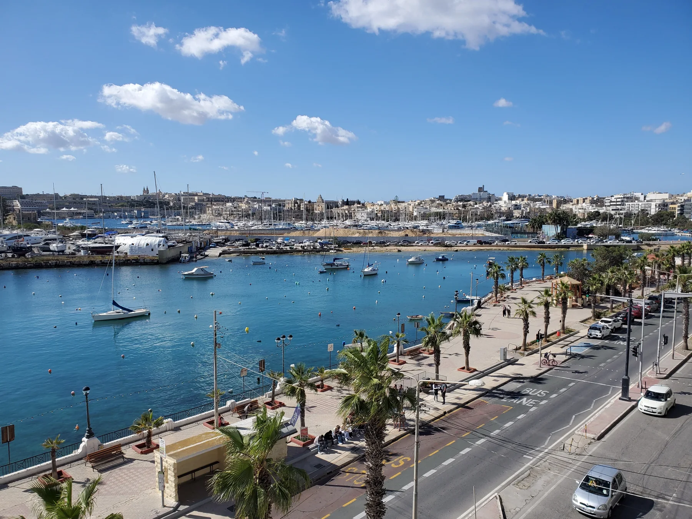

Check the property's real route to Triq ix-Xatt, including crossings, gradients and the entrance you would actually use.
GZIRA · THREE CONTEXTS
Harbour edge, lived-in streets.
Read Gzira in layers: the promenade and Triq ix-Xatt, the everyday streets behind it, then Manoel Island as its own heritage context across the bridge.

GZIRA EDITIONSTART WITH THE EXACT STREET
One locality, different daily patterns.
The Local Council places Gzira along Marsamxett Harbour and links its name to Manoel Island. That shared identity does not make every address a waterfront home or put every daily service within the same walk.
The residential grid behind the harbour needs its own pharmacy, grocery and transport check rather than a waterfront assumption.
Fort Manoel and the Lazaretto are valuable context, but Manoel Island is not a substitute label for the whole of Gzira.
Orientation, not a promise.
The promenade photo shows the harbour-facing edge, street and marina context. It does not prove a sea view, quiet interior, available parking or a short commute for any listing. Those claims require the exact property.
Gzira Local Council ↗Heritage across the bridge.
The council documents Fort Manoel and the Lazaretto as part of the island's history. This edition treats them as a distinct area reached from Gzira and draws no shortcut, access promise or finished heritage trail.
Council geography and history ↗OFFICIAL AND OPERATOR-VERIFIED EXAMPLES
Everyday anchors, without a ranking.
These examples help place practical life around Gzira. They are not claims that a venue is the best, closest or suitable for every property, and current hours remain on the linked source.
Gzira Health Centre
Primary HealthCare lists the centre at Meme Scicluna Square and shows a wider service catchment beyond Gzira.
Official centre information ↗The Convenience Shop
The operator lists a Gzira shop on Triq Sir Frederick C. Ponsonby with everyday grocery lines.
Operator information ↗O'Hea Pharmacy
The operator lists pharmacy and clinic services at 115 Triq Manoel De Vilhena.
Operator information ↗Brillace and NOVI
Brillace lists its Gzira cafe at 61 Triq il-Gzira; NOVI documents its Gzira American-food and craft-beer offer.
Brillace ↗ · NOVI ↗No line across the harbour.
This page draws no walking route, ferry route or commute time. Walking geometry, bus timetables, current car traffic and ferry operations are separate sources and must be checked from the exact origin, destination and observation time.
Open the Gzira map only when you need it.
The map includes the inland core, waterfront and Manoel Island for orientation. It deliberately draws no council boundary, route or journey time and loads from OpenStreetMap only after your click.
Gzira Local Council · Council geography and history · Office of the Address Registrar · Primary HealthCare · The Convenience Shop · O'Hea Pharmacy · Brillace Cafe · NOVI
No ranking, fixed opening hours, property-specific route, accessibility promise, guaranteed view, parking claim or locality-wide journey time is claimed.